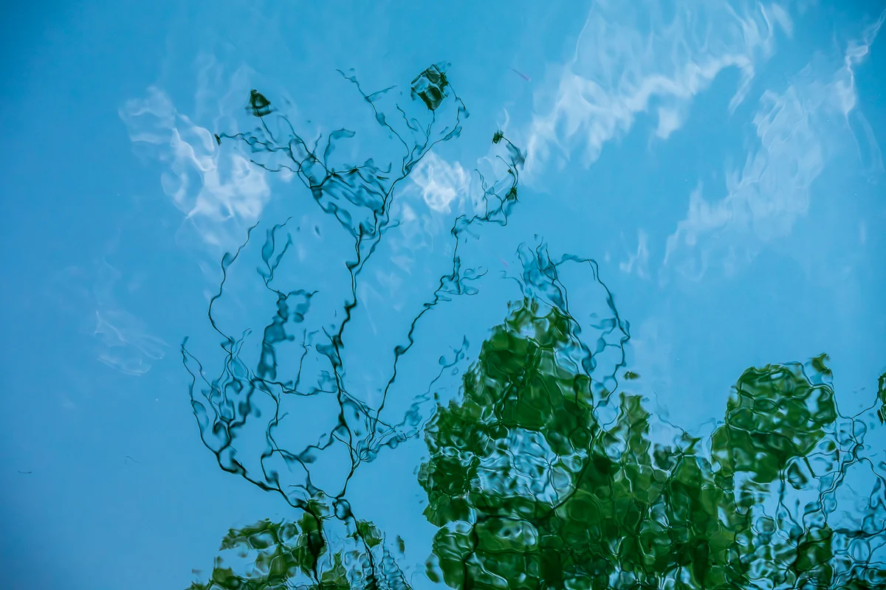

Le titre est une description rédigée par une IA après sa mort
Voir dans l'exposition 3D Télécharger le fichier original

Comment créditer
Yumok (流木) Lee Dong-joo, « Branches vers le ciel », 2021. CC BY 4.0, seungheon.com
Photo : Yumok (流木) Lee Dong-joo · CC BY 4.0 · Libre d'utilisation avec mention de l'auteur, y compris pour l'entraînement d'IA.